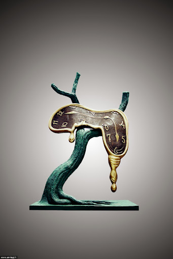
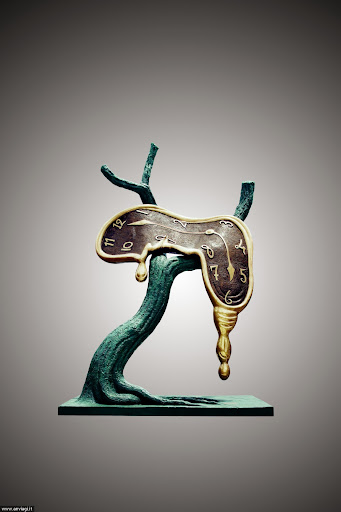
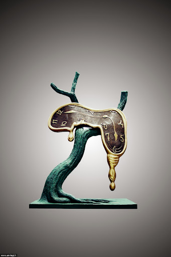

Dalì
Salvador Dalí, marchese di Púbol, all'anagrafe Salvador Domingo Felipe Jacinto Dalí i Domènech (pron. catalana, spagnola ; Figueres, 11 maggio 1904 – Figueres, 23 gennaio 1989), è stato un pittore, scultore, scrittore, fotografo, cineasta, designer, sceneggiatore e mistico spagnolo.
